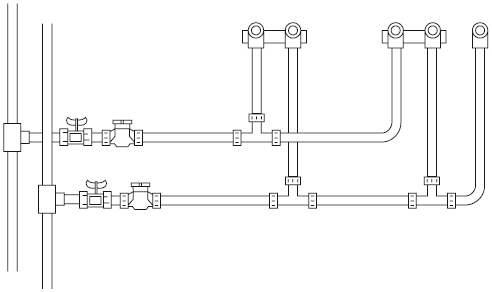

Water communications
Программа "Water communications" решает проблему расчета оптимального количества аварийных участков при прокладке труб. При этом соблюдаются нормы поставляемых объемов воды и напора в конечных пунктах.
Программа написана с целью облегчить расчеты и ускорить работу проектировщиков системы водоснабжения.